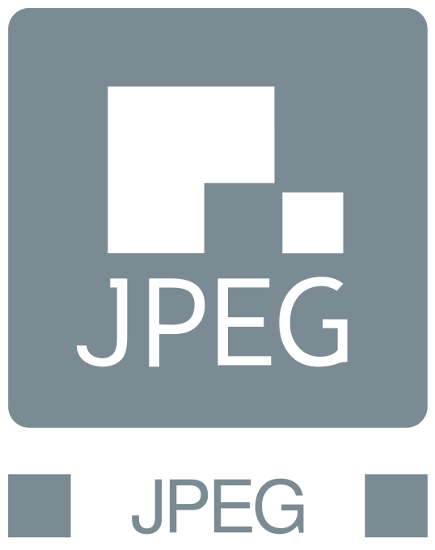
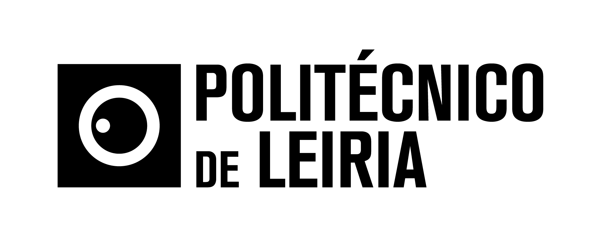
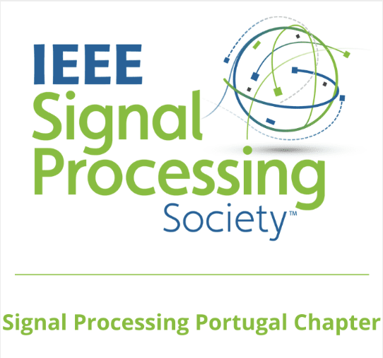
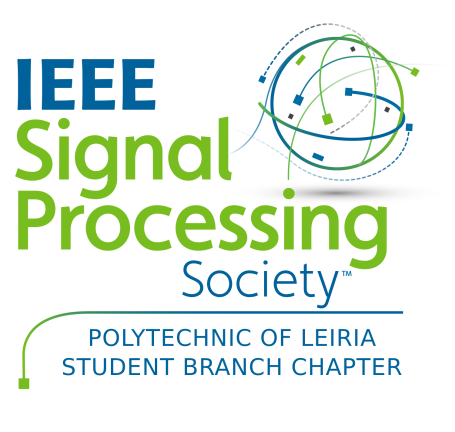

Sponsors and Support




JPEG Workshop / 2026 Cycle 1 IEEE SPS Chapter Initiative
Wednesday, July 8th 2026
The advent of Artificial Intelligence is fundamentally transforming the way visual information is represented, compressed, transmitted, authenticated, and consumed. Learning-based media coding, generative AI, and machine-oriented representations are redefining the traditional boundaries of multimedia systems, while simultaneously raising new challenges related to trustworthiness, authenticity, interoperability, and regulatory compliance.
As AI becomes an integral part of media representation, international standards play a fundamental role in ensuring that emerging technologies remain interoperable, reliable, and widely deployable. Recent developments such as learning-based image and point cloud coding, coding for machines, and media authenticity frameworks illustrate how standardization is evolving to address both technical innovation and societal needs. The JPEG Committee has been leading this transformation through the development of next-generation standards such as JPEG AI, JPEG Pleno PCC, and JPEG Trust.
This workshop brings together researchers, industry experts, policymakers, and members of the international standardization community to discuss recent advances in AI-based media representation technologies and their implications for future multimedia systems.
The event is co-organized by the Portuguese Chapter of the IEEE Signal Processing Society (IEEE SPS) within the framework of the IEEE SPS Member-Driven Initiative Program.
Attendance is free, but registration is required. Register now to secure your place at the workshop and the networking dinner.
The workshop will be held in a hybrid format, allowing participants to attend either in person or online.
| 14:00 – 14:15 | Opening Addresses |
| 14:15 – 15:30 | Session 1 – AI-Based Media Coding: Standards and Innovations |
| 15:30 – 15:45 | Coffee Break & Networking |
| 15:45 – 17:00 | Session 2 – Trust, Metadata, and Authenticity in the AI Era |
| 17:00 – 17:15 | Coffee Break & Networking |
| 17:15 – 18:00 | Session 3 – Round Table : Trustworthy Content in the Age of AI: Opportunities, Risks, and Responsibilities |
| 19:30 | Networking Dinner |
14:15 – 15:30
Recent advances in AI-powered coding technologies and their implications for performance, interoperability, and scalability.
15:45 – 17:00
The authenticity implications of AI-based representation techniques and the role of standardization in ensuring trust, authenticity, and interoperability of AI-generated and AI-processed media.
17:15 – 18:00
As AI increasingly participates in the creation, transformation, distribution, and consumption of digital content, ensuring trust becomes a critical challenge. This panel will explore the opportunities offered by AI-enabled media, the risks associated with misinformation, manipulation, and loss of authenticity, and the responsibilities of technology developers, content creators, policymakers, and standards bodies. Particular attention will be given to how media representation standards can support transparency, provenance, interoperability, and trust for content intended for both humans and machines.
19:30
The networking dinner is free but subjected to registration in the event.




Nuno Rodrigues (IPLeiria/IT | PT); Touradj Ebrahimi (EPFL | CH); João Ascenso (IST-UL/IT | PT); Frederik Temmermans (VUB | BE); Eduardo Da Silva (UFRJ | BR); António Pinheiro (UBI/IT | PT); Stuart Perry (UTS | AU); Peter Schelkens (VUB | BE); Fernando Pereira (IST-UL/IT | PT).
Interested parties are invited to join the JPEG activities. Information on how to participate is available on the JPEG Website in the Participate section. Information can be found on JPEG membership and the various Ad Hoc Groups. Regularly consult the JPEG.org website for the latest news.